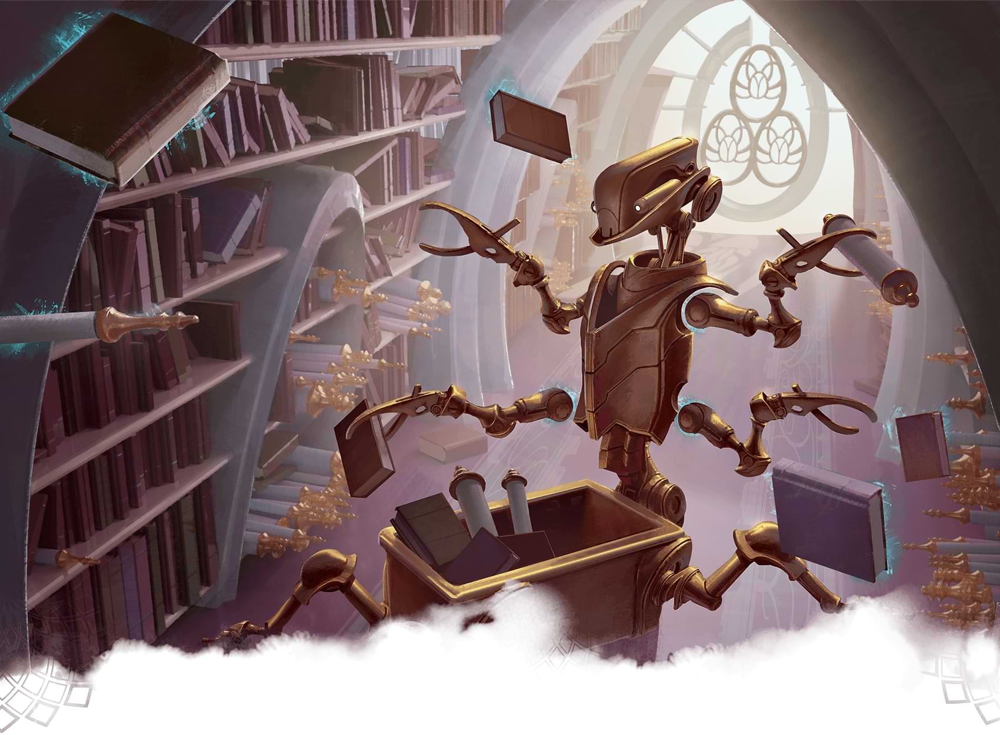

One-shots are snack-sized adventures that allow you to get right into the action of Dungeons & Dragons without the baggage that comes with an extended campaign. In addition, the self-contained nature of one-shots enables players and Dungeon Masters to more easily experiment with the breadth of options D&D provides without commitment. Maybe you want to play as a party of meme characters, complete with janky multiclassing shenanigans? Or perhaps your DM wants to try their hardest to brutally kill the characters one by one? Whatever avenue you're looking to explore with your one-shot, it can make for a fun night of gaming! In this article, we're paying homage to one-shot adventures in D&D. We'll discuss why we love them, some tips for running them, and our favorite one-shot adventures!
What Is a One-Shot?
One-shots are D&D adventures that can be finished in one 3-4 hour session. These adventures are more streamlined because of the tight turnaround time. One-shot adventures are usually meant to be self-contained, not needing any context from outside of the adventure to be run.
Why We Love One-Shots
One-shots are a casual way to get a session of D&D in without the legwork that comes with a campaign. Players can try out new builds and personalities, while DMs don't have to worry about managing a campaign, keeping notes, or writing a continuous narrative. Seeing as one-shots lack the commitment of an extended campaign, they provide a number of unique benefits:
Switch Up the Group Dynamic
One-shots are the perfect time to allow aspiring DMs at your table to step up for a session. While long-term campaigns might be daunting for a new DM, one-session adventures that don't require as much backstory, planning, and management are excellent ways to gain experience. One of the most prominent benefits of this is that it gives your table's "forever DM" a break. While switching up DMs is one of the best ways to experience a different table dynamic, switching party roles can be another way to completely change the feel of your game. Maybe your peaceful cleric is tired of healing your party and wants to rage as a barbarian? Or maybe your warlock wants to go on the straight and narrow with a paladin?
Try New Things
If you're anything like me, you have 10 janky character builds ready to go at all times. One-shots are the perfect time to try out your new creations without the stakes of being stuck with the same character for 100 sessions (or until they meet their untimely demise). This can also allow you to experiment with different campaign settings. If your group is used to playing in a traditional fantasy setting, one-shots are an excellent way to expand your horizons. The adventure anthology Journeys Through the Radiant Citadel could be an ideal starting point for tables looking to experience unique takes on fantasy while sticking to the one-session adventure format.
Play D&D Without the Strings
Agreeing to play D&D usually comes with a commitment. If your group can't dedicate a night every week (or two … or four …. or eight) to D&D, one-shots are the perfect option to get some game time while you have everyone together. If you're hanging out with friends and looking for something to do, a one-shot is much easier to put together than a campaign! One-shots are also a great way to introduce new players to the game. The focus on straightforward gameplay will help streamline the player's learning, and the reduced obligation can make things easier for those with a busy schedule. You can even help the newer players by offering pregenerated characters, so they can focus on gameplay rather than the myriad of options they're presented with during character creation.
Enjoy a Themed Play Experience
Personally, my time to run a one-shot is for a holiday, like Halloween, Valentine's Day, or Christmas. One-shots work particularly well for the over-the-top spooky or goofy themes these celebrations often inspire. While these grandiose tropes would get tiresome over the course of an extended campaign, one-shots are often the perfect dose of festive holiday spirit!

Tips for Running One-Shots
While they may not have as many gears as a full-blown campaign, one-shots can be deceptively tricky to run well. Of course, there are a few aspects that make them better for newer DMs or DMs looking for a break—less worldbuilding, a streamlined story, and throwaway characters—but the session itself requires more oversight than your typical session. In a regular campaign, if the players get off the rails and spend hours adopting a group of goblins, it's no big deal and can even make for a funny improv session. On the other hand, one-shots need to stay on track, or they will take longer than the single prescribed session. As long as there aren't any restrictions with your table, it's usually not a huge deal if your one-shot turns into a two- or three-shot. But if you're looking to run a compelling one-session adventure, here are some tips:
Keep the Intro Short
When time is of the essence, introducing characters and establishing the story needs to be fast-forwarded compared to a long-term campaign. If it takes the party an hour to describe their characters, decide if they want to work together, then negotiate their contract, you'll probably have to cut things from your planned adventure. I've found an excellent method of expediting this process is to send players the introduction for the adventure ahead of time. I ask them to brainstorm ahead of time how their characters know one another. Then, on game day, I kick off the one-shot by describing how the characters got their quest and the information they need to know. This allows me to jump straight into the action without distraction.
Expedite Combat
Combat is usually the most time-consuming element of D&D. While it can be fun for players to test their character's abilities, the last few rounds of combat can drag on if the battle is wildly in favor of the party. The best way to reduce the time investment required for combat is to set a "retreat scenario" for the party's opposition. Maybe the bandits your party is facing will run if their leader is killed? Or perhaps an owlbear with less than half of its hit points can be scared away with a Charisma (Intimidation) check? Having alternate win conditions for combat allows the party to still feel satisfied with their victory while giving you more time for social interactions and exploration!
Vary the Play
While a combat-heavy session in a long-term campaign can be balanced out by having a roleplay-heavy session the following time you play, one-shots don't have that luxury. This means that one-shots should visit all aspects of D&D play—combat, exploration, and social interaction—to ensure that players are given a chance to make their character feel effective. Barbarians might love an entire session of crushing their foes, but maybe the rogue wants to do some sneaking while the bard chats up a bartender for information? Including the three core aspects of D&D gameplay in a one-shot makes for a good one-shot, but a great one-shot intersperses these scenarios throughout the adventure to avoid any one aspect becoming stale. Think of your one-shot as a lasagna; you should layer your sauce, cheese, and noodles (combat, exploration, and social interaction in this metaphor) so that every bite has enough of each!
Our Favorite One-Shots
We have a published library of free homebrewed adventures designed to be played as one-shots, as well as various encounters of the week that can be a starting point for creating your own one-shot. There are also plenty of modules in published materials that can be run as one-session adventures. However, we understand that the sheer number of one-shot options can make choosing one to run intimidating. To help get you started, here are some of our favorite one-shots from published D&D books:
Death House
This intro adventure contained in Curse of Strahd isn't necessary to run as part of a Curse of Strahd campaign but is perfect for a spooky session. Consider leveling the party up to 2nd or 3rd level depending on their experience. Death House tends to live up to the "Death" in its name.
The Price of Beauty
A fantastic adventure full of exploration, mystery, and social interaction from the Candlekeep Mysteries anthology.
Salvage Operation
A great nautical tale found in Ghosts of Saltmarsh. This adventure features a climactic final encounter where the party has to escape a ship being attacked by a kraken that I am particularly fond of.